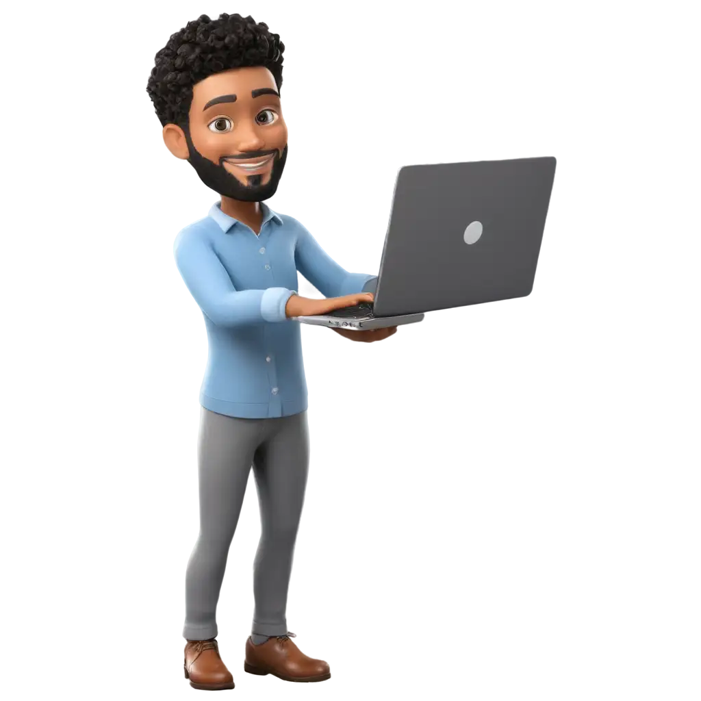

Hi , My Name Is Atharv Nalawade
And I am A passionate

Work Exprience
- First-Experience :
- Second-experience:
- Third-experience:
When i was in my fourth semester, that time we had a DTE subject , also we had a Micro-Project
of
that subject and that i was built my Micro-Project by using c langoage with graphics-Mode
because in that
project i have to do some graphics diagram related to the Topics In The DTE Subject and i was
also used
basic and advance c language Concept , That was Project Already shared on LinkDin on my Profile
, in That
project I learned much more things , and i learned One thing during my project-work ,In each
project we
learn something different ,which is outoff your syallbus,that is fact in programing under the
college-life
So The My second work experience was in the recently in the faith semister of my diploma
in faith semister i was built the small and creative Game which we played in our childhood lige
and
that known as Rock-Paper-scisser and make that because as 4'th semister in the faith semidter we
have
project and i was complete my project which is written in the line with help of java-Language ,
java language
is an my favourite Programming language , not just that project wasn't i built i every day in my
that 5'th try make
sonething different project ,because i like to do that ,even also now ,i was make these
beautifull two project for my
college project and for mine develope-Skills , i was make different small and large project.and
i will
stay constant as project maker.
So My third project is intersting , and i think also you will be intersting to read what is my
third project
so my third project is that website on which ,You see my last two work experience , this website
i built with
the help of my intership-knowledge. recently our intership is started. and in intership my
Domain Is Full-stack-Developer
So realeted to Full-stack-Developer , what is Full-stack-Developer , means which can work in
three phase ,and these
are front-end,back-end and database , so by the way i take more time to develope that website
,because don't have the
experience how to work on the fronted as slowly slowly i complte mine website , and still wait
and also check my website for
my upcoming project.